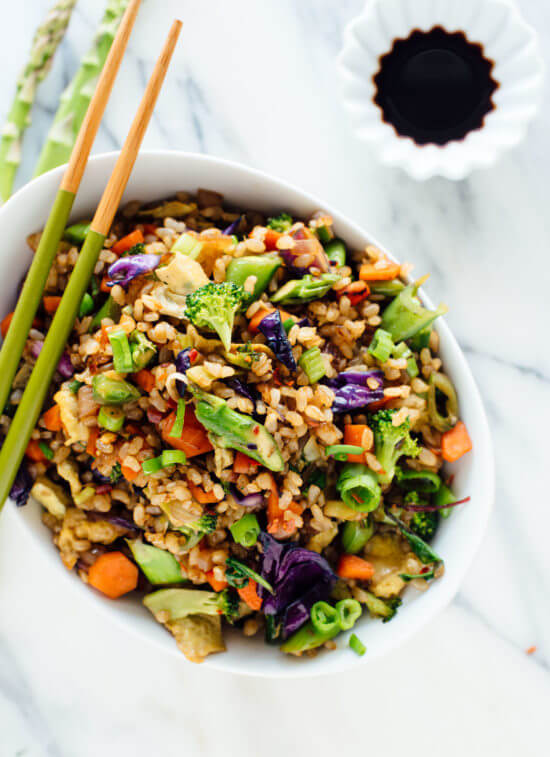

Fried Rice

It's frieeeed rice.
Ingredients:
½ teaspoons + 2 tablespoons avocado oil or safflower oil, divided
2 eggs, whisked together
1 small white onion, finely chopped (about 1 cup)
2 medium carrots, finely chopped (about ½ cup)
2 cups additional veggies, cut into very small pieces for quick cooking (see photos for size reference;
¼ teaspoon salt, more to taste
1 tablespoon grated or finely minced fresh ginger
2 large cloves garlic, pressed or minced
Pinch of red pepper flakes
2 cups cooked brown rice (*see notes!)
1 cup greens (optional), such as spinach, baby kale or tatsoi
3 green onions, chopped
1 tablespoon reduced-sodium tamari or soy sauce**
1 teaspoon toasted sesame oil
Chili-garlic sauce or sriracha, for serving (optional)
Method:
Warm a large cast iron or stainless steel skillet over medium-high heat until a few drops of water evaporate within a couple of seconds. Immediately add 1 ½ teaspoons of oil and swirl the pan to coat the bottom. Add the scrambled eggs and swirl the pan so they cover the bottom. Cook until they are just lightly set, flipping or stirring along the way. Transfer the eggs to a bowl and wipe out the pan with a heat-proof spatula.
Return the pan to heat and add 1 tablespoon of oil. Add the onion and carrots and cook, stirring often, until the onions are translucent and the carrots are tender, about 3 to 5 minutes.
Add the remaining veggies and salt. Continue cooking, stirring occasionally (don’t stir too often, or the veggies won’t have a chance to turn golden on the edges), until the veggies are cooked through and turning golden, about 3 to 5 more minutes. In the meantime, use the edge of your spatula or a spoon to break up the scrambled eggs into smaller pieces.
Use a big spatula or spoon to transfer the contents of the pan to the bowl with the cooked eggs. Return the pan to heat and the remaining 1 tablespoon oil. Add the ginger, garlic and red pepper flakes, and cook until fragrant while stirring constantly, about 30 seconds. Add the rice and mix it all together. Cook, stirring occasionally, until the rice is hot and starting to turn golden on the edges, about 3 to 5 minutes.
Add the greens (if using) and green onions, and stir to combine. Add the cooked veggies and eggs and stir to combine. Remove the pan from the heat and stir in the tamari and sesame oil. Taste, and add a little more tamari if you’d like more soy flavor (don’t overdo it or it will drown out the other flavors) or salt, if the dish needs an extra boost of overall flavor.
Divide into bowls and serve immediately. I usually serve mine with chili-garlic sauce or sriracha on the side. Leftovers store well in the refrigerator, covered, for 3 to 4 days (if you used purple cabbage, it might stain your scrambled eggs a funny blue color, but it’s fine to eat).